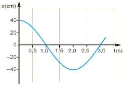
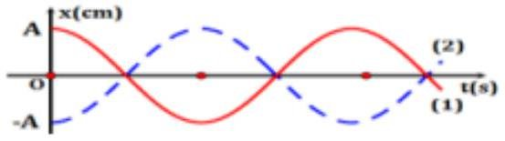
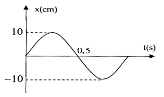
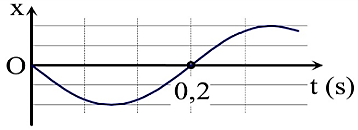

PHẦN I. Câu trắc nghiệm nhiều phương án lựa chọn
Mỗi câu có 4 phương án, chỉ chọn một đáp án đúng (0,25 điểm).
1
Đại lượng nào dưới đây đặc trưng cho độ lệch về thời gian giữa hai dao động điều hòa cùng chu kì?
2
Đồ thị li độ theo thời gian của dao động điều hòa là
3
Một vật dao động điều hòa với li độ x và vận tốc v. Chọn phát biểu đúng.
4
Đồ thị li độ - thời gian của dao động điều hòa là
5
Đồ thị li độ - thời gian của một con lắc đơn dao động điều hòa được mô tả trên hình vẽ. Biên độ dao động của con lắc đơn là:

6
Một vật dao động điều hòa trên trục Ox. Hình bên là đồ thị biểu diễn sự phụ thuộc của li độ x vào thời gian t. Biên độ dao động của vật bằng

7
Cho hai dao động điều hòa $x_1=A_1\cos(\omega t+\varphi_1)$ và $x_2=A_2\cos(\omega t+\varphi_2)$ ($A_1$, $A_2$, $\omega>0$). Độ lệch pha của $x_2$ so với $x_1$ là
8
Độ lớn độ lệch pha giữa li độ và vận tốc trong dao động điều hòa là
9
Đồ thị li độ - thời gian của một con lắc đơn dao động điều hòa được mô tả trên hình vẽ. Chu kì dao động của con lắc đơn là:

10
Đồ thị biểu diễn gia tốc a của một dao động điều hòa theo thời gian có dạng như hình bên. Pha ban đầu của dao động là

11
Đồ thị biểu diễn hai dao động điều hòa cùng phương, cùng tần số, cùng biên độ A như hình vẽ. Hai dao động này luôn

12
Một vật dao động điều hòa trên trục Ox. Hình bên là đồ thị biểu diễn sự phụ thuộc của li độ x vào thời gian t. Tần số và biên độ của dao động là:

13
Cho hai dao động cùng phương, có phương trình lần lượt là: $x_1 = 10\cos(100\pi t - 0{,}5\pi)$ (cm), $x_2 = 10\cos(100\pi t + 0{,}5\pi)$ (cm). Độ lệch pha của hai dao động có độ lớn là:
14
Một vật dao động điều hòa trên trục Ox. Hình bên là đồ thị biểu diễn sự phụ thuộc của li độ x vào thời gian t. Tần số góc của dao động là

15
Cho hai dao động điều hòa cùng tần số M và N, M có li độ là $x_1=4\cos\left(3\pi t+\frac{\pi}{3}\right)$ (cm) và N có li độ là $x_2=5\cos\left(3\pi t-\frac{\pi}{6}\right)$ (cm). Nhận xét nào sau đây đúng?
16
Đồ thị biểu diễn hai dao động điều hòa cùng phương, cùng tần số, cùng biên độ A và ngược pha nhau như hình vẽ. Điều nào sau đây là đúng khi nói về hai dao động này?

17
Một vật dao động điều hòa trên trục Ox. Hình bên là đồ thị biểu diễn sự phụ thuộc của li độ x vào thời gian t. Tần số góc của dao động là

18
Một vật dao động điều hòa trên trục Ox. Hình bên là đồ thị biểu diễn sự phụ thuộc của li độ $x$ vào thời gian $t$. Tần số và biên độ của dao động là:

19
Hai dao động điều hoà có phương trình dao động lần lượt là $x_1=4\cos 2\pi t\ (\text{cm})$, $x_2=2\cos\left(2\pi t+\frac{\pi}{3}\right)\text{ cm}$. Độ lệch pha của hai dao động bằng
20
Đồ thị biểu diễn hai dao động điều hòa cùng phương, cùng tần số.

Nhìn vào đồ thị ta có thể kết luận rằng
Nhìn vào đồ thị ta có thể kết luận rằng